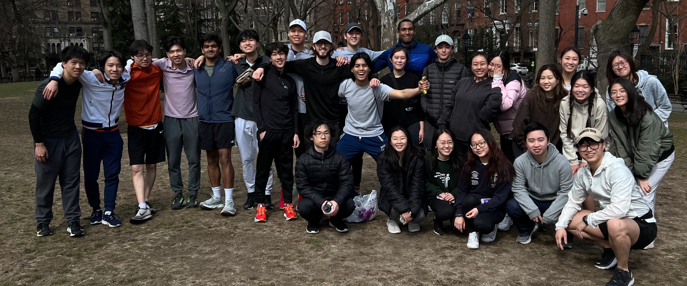

Sometimes when you come back to things, they turn out different than before. This was what happened to my relationship with running when I returned to New York City in the spring.
The day David arrived, he gave me his foam roller and showed me how to stretch properly. It turned out that there were well known and easily accessible methods of treating injury that were incredibly effective. Who knew?
This semester, a group of running friends David has gotten together started a club. It almost feels like an actual track team! We're all beginners, but it's fun to run with others.
Me and David got running watches, which makes us "real runners" now, and we're doing our first half-marathon in Jersey City in just one month. I also switched to a new running app called strava, which lets me make this map of every run I've gone on since returning to New York.